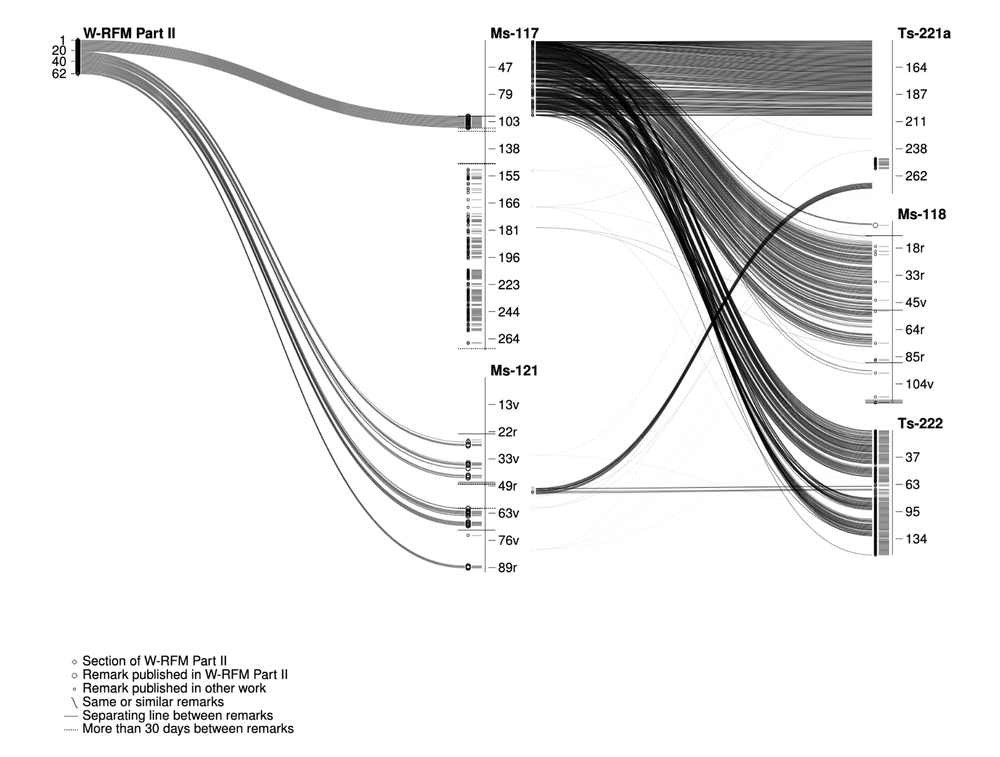
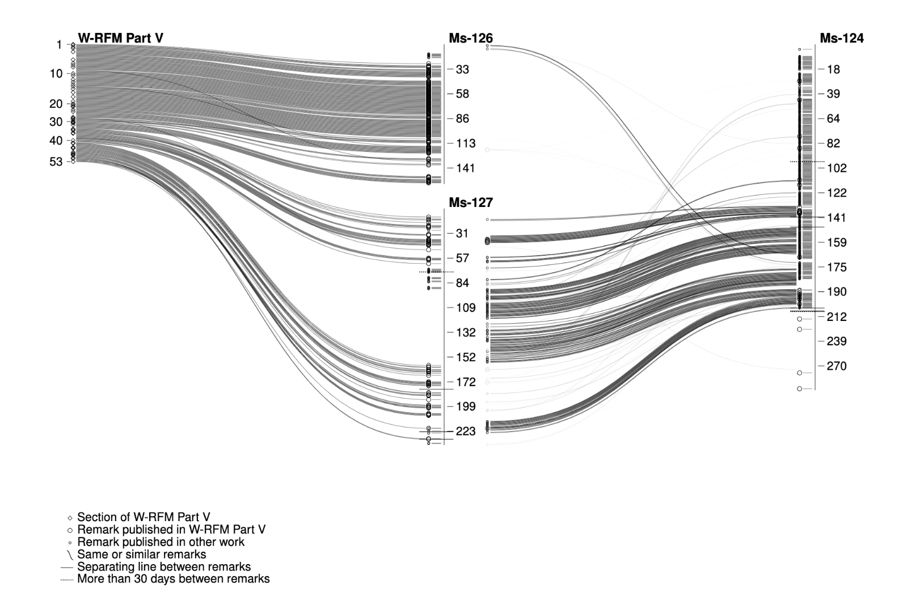

Projects
2022
github.com/fkettelhoit/wittgenstein-work-sources-viz
As part of my PhD, I created visualizations of the correspondence between Ludwig Wittgenstein's posthumous works (edited by the Nachlass executors) and the sources in Wittgenstein's own documents in the Nachlass, especially for the Remarks on the Foundations of Mathematics.
Here are some examples:
 The “works” of Wittgenstein that were published after his death by the three literary executors G.E.M. Anscombe, Rush Rhees and Georg Henrik von Wright have often been the target of criticism, giving rise to the question of what can even be considered a “work” by Wittgenstein. The Remarks on the Foundations of Mathematics (RFM), first published in 1956 and then heavily revised and expanded in 1974, are certainly one of the most problematic publications in this regard, as the literary executors themselves pointed out:
The Remarks on the Foundations of Mathematics occupy a nearly unique, and not altogether happy, position among the posthumous publications. In addition to the relatively finished Part I, corresponding to typescripts 222, 223, and 224 of the catalogue and constituting the second half of the pre-war version of the Investigations, the Remarks contain selections from several manuscripts (117, 121, 122, 124, 125, 126, and 127). In the revised edition of 1974 (English translation 1978) the selections from those manuscripts were somewhat enlarged and a further manuscript (164) which was not known to the editors at the time of the first edition was added, practically without omissions. A publication of the manuscripts in toto, however, seemed to us excluded even at the time of preparing the new edition.
—von Wright, "Philosophical Occasions", 1993, p. 502